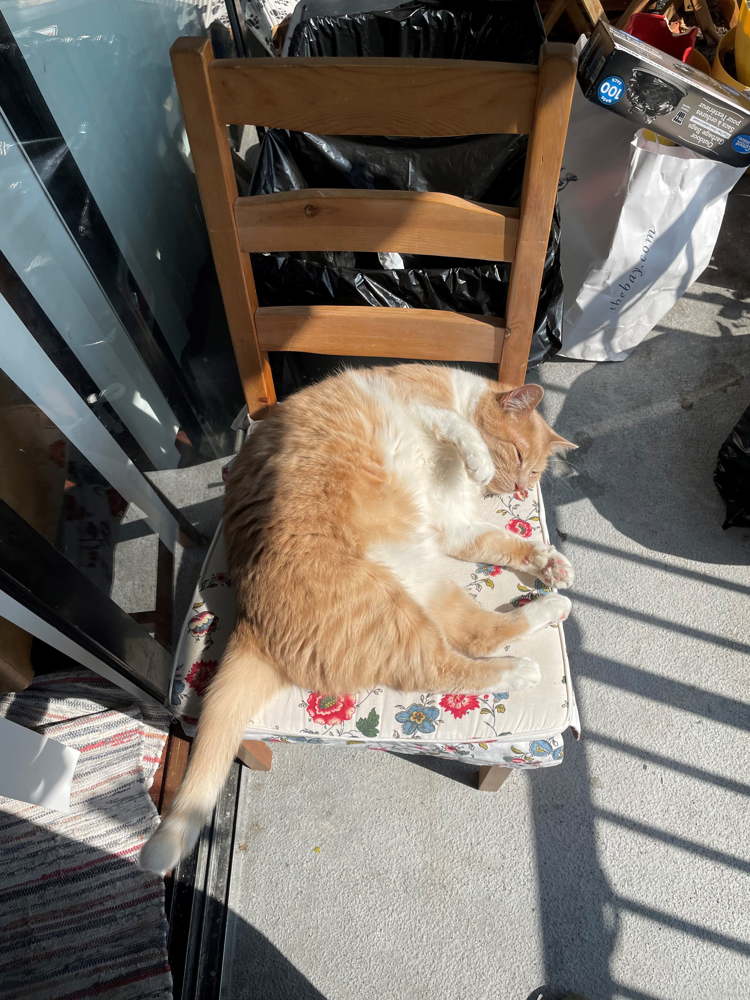

A mysterious feline with a penchant for the nighttime, Yupi often finds solace beneath the comforting layers of a blanket. He carries a distinct aura of attachment, always yearning for the presence of his beloved human. When the world sleeps, Yupi comes alive, embracing his nocturnal nature and exploring the quiet wonders of the night.
In stark contrast to Yupi stands Gigi, a sun-loving cat with a more independent spirit. While she cherishes her solitude, she will never turn down the gentle touch of a loving hand. Her fur seems to gleam and dance in the sunlight, reflecting her contentment and peace with the world around her.
